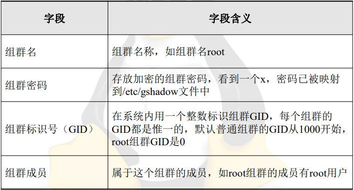

第一章
1-1 简述 Linux 系统的应用领域
1．Linux 服务器
2．嵌入式 Linux 系统
3．软件开发平台
4．桌面应用
1-2 简述Linux 系统的特点
1．开放性
2．多用户
3．多任务
4．良好的用户界面
5．设备独立性
6．丰富的网络功能
7．可靠的系统安全
8．良好的可移植性
1-3 简述Linux 系统的组成
1．内核
2．Shell
3．文件系统
4．应用程序
1-4 简述什么是Linux发行版本，主流的 Linux 发行版本有哪些(21)
一些组织和公司，将Linux系统的内核、应用软件和文档包装起来，并提供一些系统安装界面、系统配置设定管理工具，就构成了Linux发行版本。
（1）Red Hat
（2）SUSE
（3）Oracle
（4）CentOS
（5）Ubuntu
（6）Debian
（7）Mandriva
（8）Gentoo
（9）Slackware
（10）Fedora
1-5 简述 RHEL7 系统的新特性
1．支持和硬件平台多
2．优秀的安装界面
3．独特的RPM升级方式
4．丰富的软件包
5．安全性能好
6．方便的系统管理界面
7．详细而完整的在线文档
第二章
2-1 简述安装Linux系统的硬件要求。
（1）CPU：主流计算机和服务器都能达到要求；
（2）内存：安装Linux系统至少需要1GB内存（建议使用2GB甚至更高内存）；
（3）硬盘空间：若要安装所有软件包至少需要10GB以上硬盘空间；
（4）显示器和显卡；
（5）DVD光驱。
2-2 在你的计算机上设计一个合理的分区规划。(21最简分区)
• swap分区：实现虚拟内存，建议大小是物理内存的1～2倍；
• /boot分区：建议大小最少为200MB；
• /usr分区：用来存放Linux系统中的应用程序，其相关数据较多，建议大小最少为8GB；
• /var分区：用来存放Linux系统中经常变化的数据以及日志文件，建议大小最少为1GB；
• /分区：Linux系统的根目录，所有的目录都挂在这个目录下面，建议大小最少为1GB；
• /home分区：存放普通用户的数据，是普通用户的宿主目录，建议大小为剩下的空间
2-3 简述分区命名方案。
Linux系统使用字母和数字的组合来指代硬盘分区，该命名方案是基于文件的，文件名的格式为/dev/xxyN（比如/dev/sda1分区）。
/dev：Linux系统中所有设备文件所在的目录名。因为分区位于硬盘上，而硬盘是设备，所以这些文件代表了在/dev上所有可能的分区；
xx：分区名的前两个字母表示分区所在设备的类型，通常是hd（IDE硬盘）或sd（SCSI硬盘）；
y：这个字母表示分区所在的设备。例如，/dev/hda（第1个 IDE 硬盘或/dev/sdb（第2个SCSI硬盘）；
N：最后的数字N代表分区。前4个分区（主分区或扩展分区）用数字1～4表示，逻辑驱动器从5开始。例如，/dev/hda3是第1个IDE 硬盘上的第3个主分区或扩展分区；/dev/sdb6是第2个SCSI硬盘上的第2个逻辑驱动器。
2-4 简述在安装Linux系统时设置计算机IP地址的方法。
在网络和主机名界面点击配置按钮，选择 IPV4 设置并编辑，再点击添加 IP地址，输入完进行保存即可。
2-5 FirewallD 防火墙的默认连接区域是什么?
防火墙的默认连接区域为 public，public 在公共区域内使用，指定外部连 接可以进入内部网络或主机。
第三章
3-1 进入字符界面有哪些方式?
可以通过字符界面、图形界面下的终端以及虚拟控制台等多种方式进入
3-2 可以使用哪些命令关闭计算机系统?
shutdown、halt、init0
3-3 简述Linux系统中的目标概念。
RHEL 7使用目标（target）替换运行级别。目标使用目标单元文件描述，目标单位文件扩展名是.target，目标单元文件的唯一目标是将其他systemd单元文件通过一连串的依赖关系组织在一起。
3-4 在Linux系统中获取帮助有哪些方式?
使用man手册页、使用–help选项获取帮助、使用info
3-5 有哪些重定向方式?
输入重定向（输入追加重定向）、输出重定向（输出追加重定向）、错误重定向（错误追加重定向）、同时实现输出和错误重定向。
3-6 简述vi编辑器的工作模式。(21)
1.命令模式：进入vi编辑器之后，系统默认处于命令模式。命令模式控制屏幕光标的移动，字符、字或行的删除，某区域的移动、复制等。在命令模式下，按冒号键“:”可以进入末行模式，按字母键“a”或“i”就可以进入插入模式。
2.插入模式：只有在插入模式下，才可以进行文本编辑。在插入模式下按“Esc”键可回到命令模式。
3.末行模式： 将文件保存或退出vi编辑器，也可以设置编辑环境、替换字符或删除字符。 在末行模式下按“Esc”键可以回到命令模式。
第四章
4-1 Linux系统中有哪些文件类型?
（1）普通文件（-）
（2）目录文件（d）
（3）设备文件（字符设备文件（c）、块设备文件（b））
（4）管道文件（p）
（5）符号链接文件（l）
4-2 简述软链接文件和硬链接文件的区别。
硬链接记录的是目标的inode，软链接记录 的是目标的路径。软链接就像是快捷方式， 而硬链接就像是备份。软链接可以做跨分 区的链接，而硬链接由于inode的缘故，只 能在本分区中做链接。所以软链接的使用 频率要高得多。
4-3 简述Linux系统中的目录结构。(21)
Linux系统的目录结构是分层的树形结构，都是挂载在根文件系统“/”下。
/home 包含Linux系统上各用户的主目录，子目录名称默认以该用户名命名
/root 是root用户的主目录
/bin 包含常用的命令文件，不能包含子目录
/sbin 包含系统管理员和root用户所使用的命令文件
/dev 包含大部分的设备文件，比如磁盘、光驱等
/lib 包含Linux系统的共享文件和内核模块文件
/lib/modules目录存放核心可加载模块
/lib64 包含64位版本Linux系统的共享文件和内核模块文件
/tmp 包含一些临时文件
/mnt 手动为某些设备（比如硬盘）挂载提供挂载目录
/boot 包含Linux系统的内核文件和引导装载程序（如GRUB）文件
/opt 包含某些第三方应用程序的安装文件
/media 由系统自动为某些设备（一般为光盘、U盘等设备）挂载提供挂载目录
/var 该目录存放不经常变化的数据，如系统日志、打印队列、DNS数据库文件等
/etc 包含Linux系统上大部分的配置文件，建议修改配置文件之前先备份
/usr 包含可以供所有用户使用的程序和数据
/srv 存储一些服务启动之后所需要取用的资料目录
/run 一个临时文件系统，一些程序或服务启动以后，会将他们的PID放置在该目录中
/sys 在Linux系统提供热插拔能力的同时，该目录包含所检测到的硬件设置，它们被转换成/dev目录中的设备文件
/proc 是一个虚拟的文件系统，它不存在磁盘上，而是由内核在内存中产生，
用于提供系统的相关信息。
下面说明在/proc目录下的一些最重要的文件。
/proc/cpuinfo：该文件保存计算机CPU信息。
/proc/filesystems：该文件保存Linux文件系统信息。
/proc/ioports：该文件保存计算机I/O端口号信息。
/proc/version：该文件保存Linux系统版本信息。
/proc/meminfo：该文件保存计算机内存信息。
4-4 简述使用“ls -l”命令显示的详细信息。
文件类型、用户所有者访问权限、组群所有者访问权限、其他用户访问权限、
文件链接数、文件的用户所有者、文件的组群所有者、文件长度（大小）、文件
更改时间或最后访问时间、文件名称
4-5 使用什么命令可以删除具有子目录的目录?
rm -rf
第五章
5-1 常用的文本内容显示命令有哪些?区别是什么?
cat、more、less、head、tail
cat 显示文本文件内容、more 分页显示文本文件、less 回卷显示文本文件、head 显示指定文件前若干行、tail 查看文件末尾数
5-2 常用的文本处理命令有哪些?区别是什么?
sort uniq cut comm diff
sort 对文本内容升序排序（如添加-r 则为降序排序）
uniq 将重复行从输出 文件中删除
cut 从文件每行中显示出选定的字节、字符或字段
comm 逐行比较两 个已排过序的文件
diff 逐行比较两个文本文件、列出其不同之处（不用事先排序）
5-3 使用什么命令能显示当前计算机的内核版本?
uname -r 显示内核发行号
uname -m 显示计算机硬件架构名称
uname -a 显 示操作系统的全部信息
5-4 使用什么命令能清除计算机屏幕信息?
clear
5-5 使用什么命令可以以倒序方式排序文件内容?
sort -r
第六章
6-1 简述一个简单Shell程序的创建过程。
1．创建文件
2．设置可执行权限
6-2 简述执行Shell程序的方法。
（1）输入整个文件的完整路径执行Shell程序
（2）使用bash命令执行程序
6-3 简述常见的Shell环境变量。
| Shell环境变量 | 描述 |
|---|---|
| HOME | 用于保存用户主目录的完全路径名 |
| PATH | 用于保存用冒号分隔的目录路径名，Shell将按PATH变量中给出的顺序搜索这些目录，找到的第一个与命令名称一致的可执行文件将被执行 |
| TERM | 终端的类型 |
| UID | 当前用户的UID，由数字构成 |
| PWD | 当前工作目录的绝对路径名，该变量的取值随cd命令的使用而变化 |
| PS1 | 主提示符，在root用户下，默认的主提示符是“#”，在普通用户下，默认的主提示符是“$” |
| PS2 | 在Shell接收用户输入命令的过程中，如果用户在输入行的末尾输入“\”然后按回车键，或者当用户按回车键时Shell判断出用户输入的命令没有结束时，就显示这个辅助提示符，提示用户继续输入命令的其余部分，默认的辅助提示符是“>” |
6-4 简述常用的字符串比较符号。
| 字符串比较符号 | 描述 |
|---|---|
| = | 比较两个字符串是否相同，相同则为“是” |
| ！= | 比较两个字符串是否不同，不同则为“是” |
| -n | 比较字符串的长度是否大于0，如果大于0则为“是” |
| -z | 比较字符串的长度是否等于0，如果等于0则为“是” |
6-5 Linux系统中有哪些条件判断语句和循环控制流程语句?
条件判断语句：if-then-fi 语句、if-then-else-fi 条件语句、case 条件语句
循环控制语句：for 语句、while 循环语句、until 循环语句
6-6 简述if条件语句和 case条件语句的区别。
if 条件语句用于两个选项中选定一项，而 case 条件选择为用户提供了根据字符串或变量的值从多个选项中选择一项的方法
第七章
7-1 在Linux系统中用户账户有哪些分类?
root 用户（UID 为 0）、系统用户（UID 为 1-999）、普通用户（UID 默认从 1000开始，默认的 UID 最大值为 60000）
7-2 管理用户账户的配置文件有哪些?并描述这些文件各字段的含义。
（1）/etc/passwd
（2）/etc/shadow
7-3 管理组群账户的配置文件有哪些?并描述这些文件各字段的含义。
（1）/etc/group

（2）/etc/gshadow

7-4 默认情况下新创建的第一个用户账户UID是多少?
1000
7-5 简述对用户账户设置密码和不设置密码的区别。
用户不设置密码默认是被锁定的，无法使用，需要使用 passwd 命令设置密
码方可使用。
第八章
8-1 简述磁盘分区的含义。
磁盘分区是指对硬盘物理介质的逻辑划分，将磁盘分成多个分区，分区就是磁盘的‘段落’。磁盘分区一共有三种：主分区、拓展分区、逻辑驱动器。
8-2 简述格式化的含义。
格式化是指对磁盘分区进行初始化的一种操作，在磁盘中建立磁道和扇区，这种操作通常会导致现有的分区中所有的数据被清除。
8-3 fdisk命令有哪些子命令?其含义分别是什么?(21)
8-4 Linux系统中常用的文件系统有哪些?
XFS、ext4、JFS、ext3、ext2、ISO9660、MSDOS、NFS
8-5 使用新磁盘存储数据一般要经过哪些操作步骤?
将磁盘进行分区，然后创建文件系统，最后将文件系统挂载到目录
8-6 要实现开机自动挂载文件系统,可以通过哪些方法来实现?
在 /etc/fstab文件中添加该磁盘分区的相关信息，可以通过提供设备名称、UUID和卷标实现，设置完成重启计算机系统以后，文件系统将会自动挂载
第九章
9-1 使用RPM 软件包管理的用途是什么?(21)
（1）可以安装、删除、升级、刷新和管理RPM软件包；
（2）通过RPM软件包管理能知道软件包包含哪些文件，也能知道系统中的某个文件属于哪个RPM软件包；
（3）可以查询系统中的RPM软件包是否安装并查询其安装的版本；
（4）开发者可以把自己的程序打包为RPM软件包并发布；
（5）软件包签名GPG和MD5的导入、验证和签名发布；
（6）依赖性的检查，查看是否有RPM软件包由于不兼容而扰乱系统
9-2 简述升级RPM 软件包和刷新RPM 软件包的区别。
升级软件包是删除和安装的组合，不管该软件包的早期版本是否已经被安装，升级选项都会安装该软件包。刷新软件包时，系统会比较指定的软件包的版本，当比已安装的版本更新，它就会升级到更新的版本，如果软件包先前没有安装，那么刷新并不会安装该软件包
9-3 简述在本地磁盘上创建本地软件仓库的步骤。
1、安装软件包 安装 deltarpm、python-deltarpm 和 createrepo 软件包
2、复制软件包 复制 Linux 系统安装光盘中的软件包
3、创建软件仓库配置文件
4、创建软件仓库 使用 createrepo 命令创建软件仓库
9-4 tar命令可以调用哪些压缩程序?
gzip（-z）、bzip2（-j）和 xz（-J）
备份 tar cvf xxx xxx
查看 tar tvf xxx
添加 tar rvf xxx yyy
解压 tar xvf xxx
更新 tar uvf
第十章
10-1 文件有哪些权限?其含义分别是什么?(21三个特殊权限)
每位用户都有对文件或目录的读取、写入和执行权限。第一套权限控制访问自己的文件权限，即所有者权限。第二套权限控制用户组访问其中一个用户的文件的权限。第三组权限限制其他用户访问一个用户的文件的权限。这三套权限赋予用户不同类型（即用户所有者、组群所有者、和其他用户）的读取、写入及执行权限。
10-2 可以使用哪些方法设置文件的权限?
（1）文字设定法设置权限
u 表示用户所有者，g 表示组群所有者，o 表示其他用户，a 表示所有用户（系统默认值）
+表示添加某个权限 -表示取消某个权限 =表示赋予给定权限并取消原先权限（如果有的话）
（2）数字设定法设置权限
使用 r，w，x 这三个字符为用户所有者，组群所有者和其他用户设置权限。r 对应数值为 4，w 对应为 2，x 对应为 1， -对应为 0，然后将其相加。
10-3 特殊权限设置
chmod u+s
S=-+SUID s=x+SUID
SGID chmod g+s
S=-+SGID s=x+SGID
Sticky chmod o+t
T=-+Sticky t=x+Sticky
10-4 更改文件和目录所有者
chown [选项][用户.组群][文件|目录]
chown [选项][用户:组群][文件|目录]
第十一章
11-1 简述Linux系统的进程分类。
① 交互式进程：一个由 Shell 启动并控制的进程，交互式进程既可在前台运行，也可在后台运行
② 批处理进程：与终端无关，安排在指定时刻完成的一系列进程
③ 守护进程：在引导系统时启动，以执行即时的操作系统任务。如 crond(定时任务)，rsyslogd,name
11-2 简述 Linux系统的启动过程。(21)
①BIOS 自检②启动 GRUB2③加载内核④执行 systemd 进程⑤初始化系统环境⑥执行/bin/login 程序
11-3 简述GRUB2所具有的新功能。
①图形接口②使用模块机制③支持脚本语言④支持救援模式⑤国际化语言 ⑥有一个灵活的命令行接口⑦针对文件系统、文件、设备、驱动、终端、命令、 分区表、系统加载的模块化、层次化、基于对象的框架⑧支持多种文件系统格式 ⑨可以访问已经安装在设备上的数据 10 支持自动解压
11-4 简述GRUB2密码支持的两种格式。
（1）明文密码：密码数据没有经过加密，安全性差
（2）PBKDF2 加密密码：密码经过 PBKDF2 哈希算法进行加密，在文件中存储的是加密 后的密码数据，安全性较高
11-5 /etc/crontab 文件
root 用户通过修改/etc/crontab 文件可以实现任务计划，普通用户无法修 改该文件，但可以使用 crontab 命令配置 cron 任务。/etc/crontab 文件是 cron 的默认配置文件，它的每一行都代表一项任务
minute hour day month dayofweek user-name commands
11-6 Systemd 进程的作用
①扮演终结父进程的角色，因为 systemd 进程永远不会被终止，所以系统总是可以确信它的存在，并在必要的时候以它作为参照。
②在进入某个特定的服务启动集合，即/etc/systemd/system/default.target，它的作用是由运行目标target 定义的。
第十二章
12-1 简述网卡配置文件的内容。
在Linux统中，系统网络设备的配置文件保 存在/etc/sysconfig/network-scripts目录下， 其中文件ifcfg-eno16777736包含一块网卡 的配置信息，文件ifcfg-lo包含回路IP地址 信息。
12-2 测试网络连通可以使用哪些命令?
ping、netstat
12-3 DNS服务使用什么端口号?
53
12-4 systemctl 的使用(21)
systemctl start named.service 后缀名最好不要省略 如果省略了默认拓展是.service
systemctl start named.service 启动 named 服务
systemctl status named.service 查看 named 服务当前状态
systemctl stop named.service 停止 named 服务
systemctl restart named.service 重启 named 服务
systemctl enable named.service 设置 named 服务开机自动启动
systemctl disable named.service 停止 named 服务开机自动启动
systemctl is-enabled named.service 查询 named 服务是否开机自动启动
systemctl list-units –type=service 查看所有已启动的服务
第十三章
13-1 简述OpenSSH替代telnet的主要原因。
telnet 是不安全的，它是使用纯文本口令并以明文发送，而 OpenSSH 将增进系统安全性，使用 OpenSSH 软件进行通信时，登录验证口令将会被加密。
13-2 简述VNC 软件的组成部分。
VNC软件要由两个部分组成：服务端的VNC server和客户端的VNCviewer。用户需先将VNCserver安装在被远程操控的计算机上后，才能在主控端执行VNC viewer进行远程操控。
13-3 SSH 的登录和scp 传输文件命令(21)
SSH 登录：ssh [选项] [用户@]主机 [命令]
例如：ssh root@192.168.0.100 ls/boot 以 root 账号连接远程主机 192.168.0.100 并 执行 ls /boot 命令
scp 传输文件：scp [选项] [[用户@]主机 1：]文件 1 [[用户@]主机 2：]文件 2
例如：ssh /root/a root@192.168.0.100:/root/b 用root账号把本地文件root/a传送到192.168.0.100远程主机下的/root 下，并改名b
第十四章
14-1 简述NFS的含义。
NFS（Network File System 网络文件系统）是一个文件系统，通过使用 NFS，用户和程序可以向访问本地文件一样访问远程系统上的文件
14-2 简述/etc/exports文件内容的格式。
/etc/exports 文件控制着 NFS 服务器要导出的共享目录以及访问控制。文件内容格式如下： 共享目录 客户端（导出选项）
/etc/exports 文件中添加的共享目录必须使用绝对路径，不能使用相对路径， 而且该目录必须先创建好，该目录将作为 NFS 服务器上的共享目录并题供给客户端使用。
客户端是指可以访问 NFS 服务器共享目录的客户端计算机，客户端计算机可以是 一台计算机，也可以是一个网段，甚至一个域。
补充练习
1.什么是LVM?
LVM（Logical Volume Manager）逻辑卷管理 它是 Linux 环境下对磁盘分区进行管理的一种机制，屏蔽了底层磁盘布局，便于动态调整磁盘容量。
2.什么是PV、VG、LV?
PV（Physical Volume）物理卷：整个硬盘或使用 fdisk 等工具建立的普通分区
VG（Volume Group）卷组：一个或多个物理卷组合而成的整体
LV（LogicalVolume）逻辑卷：从卷组中分割出的一块空间，用于建立文件系统
3.PV、VG、LV之间的相互关系?
4.逻辑卷是否可以在线扩容、缩小?
可以在线扩容，不可以在线缩小
5.文件系统是否可以在线扩容和缩小?
可以在线扩容，不可以在线缩小
6.缩小逻辑卷或文件系统应注意哪儿些?
必需将逻辑卷卸载并确定数据使用量
7.如何创建逻辑卷?(21)
①新建空分区②初始化分区（创建PV）③创建卷组④创建逻辑卷
8.卷组的PE 默认大小是多少?
4MB